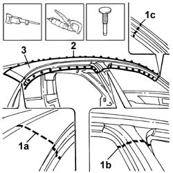
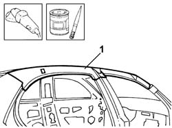
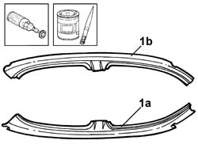
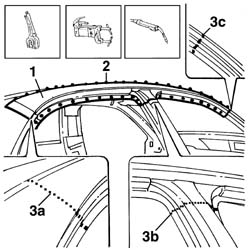

7210E34 SIDE PANEL MOULDING/ROOF CONNECTOR PROFILE
- Path
- Procedures > 72 panels and frames > 7210 REMOVING REFITTING > 7210E EXTERNAL PARTS > 7210E34 SIDE PANEL MOULDING/ROOF CONNECTOR PROFILE
- Kind
- repair procedure (removal / refitting; the operation number is the code)
- Applies to
- all engines; all production periods
- Interactive page
- https://sloeber94.github.io/elrnDB-lThss/en/#/501162
Applies to: all engines; all production periods
Applies to: all engines; all production periods
 Removing
Removing
 Refitting
Refitting- Carry out any bodyshell straightening operations before cutting the component.
1. Cut at points (1a), (1b) and (1c) using a power saw.
2. Remove the welds along the perimeter of the side member using a chamfering machine.
3. Detach the side member using a hammer and chisel and remove it.

Applies to: all engines; all production periods
Refitting
Removing1. Straighten the edges of the panel and grind the surface of the bodyshell applying electro-galvanizing paint.

Applies to: all engines; all production periods
1. Remove the anti-corrosion treatment from the inner perimeter (1a) and the outer perimeter (1b) using a rotary brush and apply electro-galvanizing paint.

Applies to: all engines; all production periods
1. Position the replacement part and secure it using self-locking clamps.
- Check that the replacement part is correctly positioned.
2. Spot weld along the perimeter of the side member.
3. Weld in areas (3a), (3b) and (3c).

Applies to: all engines; all production periods
- Check that the welded replacement part is perfectly positioned.
- Level the spot welds using a disc grinder.
- Apply electro-galvanizing paint to the ground areas.